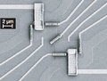

|
LIST OF PUBLICATIONS
2022
2021
Significant energy relaxation of quantum dot emitted hot electrons
Dongsung T. Park, Uhjin Kim, Dongkun Kim, Hwanchul Jung, Juho Choi , Cheolhee Han, Yunchul Chung ,
H.-S. Sim, V. Umansky, Hyoungsoon Choi, and Hyung Kook Choi
PHYSICAL REVIEW RESEARCH 3, 033015 (2021)
Single-shot readout of a driven hybrid qubit in a GaAs double quantum dot
Wonjin Jang, Min-Kyun Cho, Hyeongyu Jang, Jehyun Kim, Jaemin Park, Gyeonghun Kim,
Byoungwoo Kang, Hwanchul Jung, Vladimir Umansky, and Dohun Kim
Nano Lett. 2021, 21, 4999−5005
Electron Interference in a Quantum Ring with a Tunable Magnetic Field Shield
Minky Seo, Hwanchul Jung, and Yunchul Chung
Appl. Sci. Converg. Technol. 30 (2); 62-64 (2021)
2020
Individual two-axis operations of three singlet-triplet qubits in a micromagnet integrated GaAs quantum dot
Wonjin Jang, Min-Kyun Cho, Jehyun Kim, Hwanchul Jung, Vladimir Umansky, and Dohun Kim
Appl. Phys. Lett. 117, 234001 (2020)
Numerical Simulation of Conductance through Quantum Point Contacts with an Embedded Impurity
Changki Hong, Yunchul Chung
Journal of the Korean Physical Society volume 76, pages150–154 (2020)
2019
Fast raster scan multiplexed charge stability measurements toward high throughput quantum dot array calibration
Wonjin Jang Min-Kyun Cho Myungwon Lee Changki Hong Jehyun Kim Hwanchul Jung
Yunchul Chung Vladimir Umansky and Dohun Kim
Appl. Phys. Lett. 114, 242102 (2019)
2018
Transport Properties of a Quantum Dot and a Quantum Ring in Series
Minky Seo and Yunchul Chung
J. Appl. Phys. 122, 194502 (2017)
Electron Transport in a Multiple Quantum Dot: Recent Progress
Yunchul Chung
Journal of the Korean Physical Society volume 72, pages138–143 (2018)
Attractive Coulomb interactions in a triple quantum dot
Changki Hong,1 Gwangsu Yoo,2 Jinhong Park,3 Min-Kyun Cho,4 Yunchul Chung,1,3,* H.-S. Sim,2,† Dohun Kim,4,‡
Hyungkook Choi,5 Vladimir Umansky,3 and Diana Mahalu
PHYSICAL REVIEW B 97, 241115(R) (2018)
2017
Upper frequency limit depending on potential shape in a QD-based single electron pump
Ye-hwan Ahn, Changki Hong, Young-Seok Ghee, Yunchul Chung, Young-Pyo Hong, Myung-Ho Bae, and Nam Kim
J. Appl. Phys. 122, 194502 (2017)
Nontrivial transition of transmission in a highly open quantum point contact in the quantum Hall regime
Changki Hong, Jinhong Park, Yunchul Chung, Hyungkook Choi, and Vladimir Umansky
Phys. Rev. B 96, 205431 (2017)
Numerical simulation of quantized current generated by a quantum dot pump
Ye-Hwan Ahn, Yunchul Chung
J. Appl. Phys. 122, 054303 (2017)
2015
Precision measurement of a potential-profile tunable single electron pump
Myung-Ho Bae, Ye-Hwan Ahn, Minky Seo, Yunchul Chung, J. D. Fletcher, S. P. Giblin, M. Kataoka, and Nam Kim
Metrologia. 52, 195-200 (2015)
2014
Improvement of electron pump accuracy by a potential-shpe-tunable quantum dot pump
Minky Seo, Ye-Hwan Ahn, Youngheon Oh, Yunchul Chung, Sungguen Ryu, H.-S. Sim, In-Ho Lee, Myung-Ho Bae, and Nam Kim
Phys. Rev. B 90, 085307 (2014)
Tunable double and triple quantum dots in carbon nanotube with local side gates
Bum-kyu Kim, Minky Seo, Sung Un Cho, Yunchul Chung, Nam Kim, Myung-Ho Bae, and Ju-jin Kim
Nanotechnology. 25, 295201 (2014)
Multi-Valued Logic Gates based on Ballistic Transport in Quantum Point Contacts
M. Seo, C. Hong, S. -Y. Lee, H. K. Choi, N. Kim, Y. Chung, V. Umansky, and D. Mahalu
Scientific Reports. 4, 3806 (2014)
2013
Charge Frustration in a Triangular Triple Quantum Dot
M. Seo, H. K. Choi, S.-Y. Lee, N. Kim, Y. Chung, H.-S. Sim, V. Umansky, and D. Mahalu
Phys. Rev. Lett. 110, 046803 (2013)
Selected for 'News & Views' in Nature
A frustrated trio, Nature 495, 321 (2013)
Charge stability of a triple quantum dot with a finite tunnel coupling
Soo-Young Lee and Yunchul Chung
Phys. Rev. B 87, 045302 (2013)
Magnetic Field Dependence of a Charge-frustrated State in a Triangular Triple Quantum Dot
M. Seo and Y. Chung
J. Kor. Phys. Soc. 63, 1768 (2013)
2012
Quantum point contact with large subband energy spacings
Y. J. Um, Y. H. Oh, M. Seo, S. Lee, Y. Chung, N. Kim, V. Umansky, and D. Mahalu
Appl. Phys. Lett. 100, 183502 (2012)
Wide-band current preamplifier for conductance measurements with large input capacitance
Andrey V. Kretinin and Yunchul Chung
Review OF Scientific Instruments 83, 084704 (2012)
Geometric phase around multiple exceptional points
Soo-Young Lee, Jung-Wan Ryu, Sang Wook Kim, and Yunchul Chung
Phys Rev A 85, 064103 (2012)
Nonuniversal Conductance Quantization Observed in a Gate-defined 1D Wire
C. Hong and Y. Chung
J. Kor. Phys. Soc. 61, L671 (2012)
Anomalous Conductance Quantization Observed in a Quantum Point Contact with an Asymmetric Confinement Potential
M. Seo and Y. Chung
J. Kor. Phys. Soc. 60, 1907 (2012)
Suppression of Switching Noise in a Quantum Device Based on GaAs/AlxGa1-xAs Two Dimensional Electron Gas System
Y. Oh, M. Seo, and Y. Chung
J. Kor. Vac. Soc. 21, 151 (2012)
2011
Complex stationary-phase points in dynamical-tunneling emissions
Soo-Young Lee and Yunchul Chung
Phys Rev A 84, 045805 (2011)
2010
Single electron pumping through a quantum dot-embedded carbon nanotube using surface acoustic wave
Bum-Kyu Kim, Ju-Jin Kim, Minky Seo, Yunchul Chung, Byung Chil Woo,Jinhee Kim, Woon Song, and Nam Kim
Appl. Phys. Lett. 97, 262110 (2010)
Dependence of the tunneling quasiparticle charge determined via shot noise measurements on the tunneling barrier and energetics
M. Dolev, Y. Gross, Y. C. Chung, M. Heiblum, V. Umansky, and D. Mahalu
Phys. Rev. B 81, 161303(R) 2010
2009
The Frequency Dependence of Quantized Current Plateaus Induced by Surface Acoustic Waves Through a Quantum Point Contact
Minky Seo, Hana Kim, Yunchul Chung, Nam Kim, Byung-Chill Woo, Jinhee Kim
Journal of the Korean Physical Society 55, 2482~2485 (2009)
2008
Complementarity in a Closed-Loop Aharonov-Bohm Interferometer
Gyong Luck Khym, Kicheon Kang, Dong-In Chang, Hu-Jong Lee, Yunchul Chung
Journal of the Korean Physical Society 53, 3640~3644 (2008)
Detection of a Countable Number of Magnetic Particles for Biological Applications Using a Hall Device
Y. Kim, S. Joo, W. Lee, J. Hong, S. K. Hong, K. H. Kim, S. U. Kim and K. Rhie, S. Lee, Y. Chung, K. Shin
Journal of the Korean Physical Society 52, 513 (2008)
Quantum mechanical complementarity probed in a closed-loop Aharonov-Bohm interferometer
Dong-In Chang, Gyong Luck Kim, Kicheon Kang, Yunchul Chung, Hu-Jong Lee, Minkey Seo, Moty Heiblum, Dianan Mahalu, Vladimir Umansky
Nature Physics 4, 205 (2008)
2007
Length Dependence of the Fractional Conductance Anomaly in Constricted Conducting Channels
Dong-In Chang, Hu-Jong Lee, and Yunchul Chung
Journal of Korean Physical Society 51, 1395 (2007)
Beating of Aharonov-Bohm oscillations in a closed-loop interferometer
Sanghyun Jo, Gyoung Luck Khym, Dong-In Chang, Yunchul Chung, Hu-Jong Lee, Kicheon Kang, Diana Mahalu, and Vladimir Umansky
Phys. Rev. B 76, 035110 (2007)
Tunable 0.7 conductance plateau in quantum dots
Yunchul Chung, Sanghyun Jo, Dong-In Change, Hu-Jong Lee, M. Zaffalon, V. Umansky, and M. Heiblum
Phys. Rev. B 76, 035316 (2007)
Interference between two indistinguishable electrons from independent sources
I. Neder, N. Ofek, Y. Chung, M. Heiblum, D. Mahalu, and V. Umansky
Nature 448, 333~337 (2007)
Quantization of the Current Induced by a Surface Acoustic Wave through a Quantum Point Contact
Nam Kim, Byung-Chill Woo, Jinhee Kim, Minky Seo, and Yunchul Chung
Jorunal of Korean Physical Society 50, 1290 (2007)
Electron Bunching in Transport through Quantum Dots in a High Magnetic Field
O. Zarchin, Y.C. Chung, M. Heiblum, D. Rohrlich, and V. Umansky
Phys. Rev. Lett. 98, 066801 (2007)
2006
The Resonant Tunneling States in a Quantum Point Contact
Dong-In Chang, Hu-Jong Lee, and Yunchul Chung
Journal of Korean Physical Society 49, S692 (2006)
Papers at Weizmann Institute and Oxford University
2003
Scattering of Bunched Fractionally Charged Quasiparticles
Yunchul Chung, M. Heiblum, and V. Umansky
Phys. Rev. Lett. 91, 216804 (2003)
Anomalous Chiral Luttinger Liquid Behavior of Diluted Fractionally Charged Quasiparticles
Y.C. Chung, M. Heiblum, Y. Oreg and D. Mahalu
Phys. Rev. B(R) 67, R201104 (2003)
An Electron Mach-Zehnder Interferometer
Yang Ji, Yunchul Chung, David Sprinzak, M. Heiblum D. Mahalu and Hadas Shtrikman
Nature 422, 415 (2003)
2002
Bunchung of fractionally charged quasiparticles tunnelling through high-potential barriers
E. Comforti, Y.C. Chung, M. Heiblum, V. Umansky & D. Mahalu
Nature 416, 515 (2002)
Dominance of Feri-Surface Holes in p-Type Tunneling
Y.C. Chung, T. Reker, A.R. Glanfield, P.C. Klipstein, R. Grey
Phys. Rev. Lett. 88 126802 (2002)
Multiple Scattering of Fractionally Charged Quasiparticles
E. Comforti, Y.C. Chung, M. Heiblum,and B. Umansky
Phys. Rev. Lett. 89 066803 (2002)
Vertical transport and electroluminescence in InAs/GaSb/InAs structures : GaSb thickness and Hydrostatic pressure studies
M. Roberts, Y.C. Chung, S. Lyapin, N.J. Mason, R.J. Nicholas, and P.C. Klipstein
Phys. Rev. B 65, 235326 (2002)
Magnetic-field-induced suppression of tunnelling into a two-dimensional electron system
T. Reker, Y.C. Chung, H. Im, P.C. Klipstein, R.J. Nicholas and H. Shtrikman
J. Phys.:Condens. Matter 14 5561 (2002)
Effective Mass Anisotropy of Gamma Electrons in GaAs/AlGaAs Quantum Wells
T.Reker, H.IM, L.E.Bremme, H.Choi, Y.Chung, P.C.Klipstein and H.Shtrikman
Phys. Rev. Lett. 88 056403-1 (2002)
2000
X_x-X_y interface band mixing in GaAs/AlAs heterostructures
H. Im, L.E. Bremme, Y.C.Chung, P.C.Klipstein, R.Grey, G.Hill
Physica E 6 214 (2000)
|
|
SELECTED PAPERS
|

|
Interference between two indistinguishable electrons from independent sources
Nature (2007)
|
|